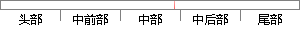

当计算出M后，我们使用基于谱聚类的图划分策略(归纳见算法1)。
片段位置图

相似结果|
相似片段 1：4．2-3基于相关性分析的决策树生成有了消除噪音数据后的主要归纳关系，接下便要开始树的生成。在这一步我们会使用不同于ID3、C4．5、MedGen等算法中所使用的基于信息熵的条件属性划分选择标准，而是采用
相似片段 2：的得分，进行使用基于划分的聚类分析算法，对客户进行分类，在保证客户细分科学合理性的前提下，制定出切实可行的营销策略。二、客户细分的基础(一)客户细分的基础一般说来，客户细分的基础可能是客户行为理论中
|
※ 片段修改建议 ※
近似词参考：- 我们：咱们
- 使用：利用
- 划分：分别
- 策略：计谋
系统自动生成语句：当计算出M后，咱们利用基于谱聚类的图分别计谋(归纳见算法1)。
注：本片段修改建议为系统自动生成，仅供参考。